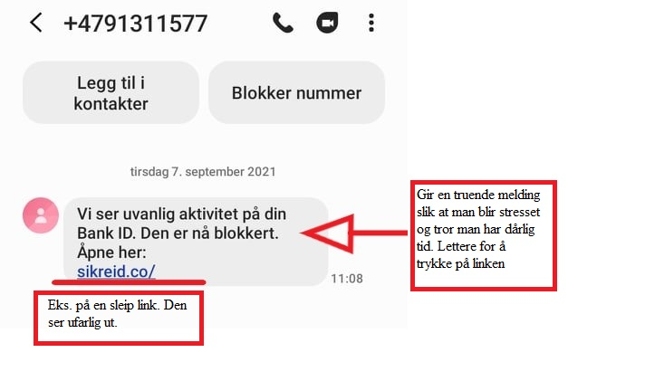
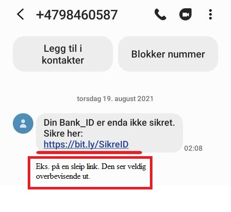
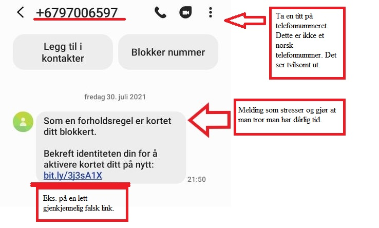

Hva er Phishing
Phishing er at noen prøver å lure informasjon ut av deg. Ofte gjennom falske eposter eller meldinger fra personer eller bedrifter du stoler på. Det svindlerne prøver å få tak i er ofte personnummeret, bankkontoinformasjonen eller brukernavn og passord til nettjenester. Dette er helt vanlige ting å gi til tjenester eller personer du stoler på, det er derfor svindlerne utgir seg for å være akkurat de. I de aller fleste tilfeller er målet økonomisk vinning.En veldig vanlig form for Phishing er at du får en epost fra noen du stoler på, f.eks Skatteetaten. De sier du har penger til gode, så du trykker på lenken for å logge deg inn. Kanskje ser nettsiden helt lik ut som Altinn, men det er en svindelside som samler informasjonen din. Deretter kan svindlerne bruke informasjonen din selv, eller de kan selge den videre.
Det finnes mange forskjellige typer phishing, alt fra eposter fra nigerianske prinser til falske fakturaer og falske facebook-meldinger.
 
Tiltak
Reaksjon på phishing
Hvis du er utsatt for phishing og du har oppgitt f.eks passord, er det viktig at du bytter det passordet så fort som mulig. Passordet til eposten er noe av det viktigste, fordi hvis svindlerne har tilgang til denne, har de tilgang til alle andre passord også. De kan tilbakestille passord på andre sider. Hvis du kan, aktiver to-trinn aktivering. Da må man logge seg på gjennom en melding på mobilen også.Hvis du er i tvil om du har blitt utsatt for phishing, er det lurt å ringe banken og fortelle dem hva som har skjedd. Sørg for å sperre bankkontoen din og ring politiet. Om du skulle svindles for mye penger, hjelper det med en politianmeldelse.
Det viktigste er å ha sunn fornuft på internettet. Hvis du har en dårlig magefølelse rundt en melding eller nettside er den mest sannsynlig ikke troverdig.
